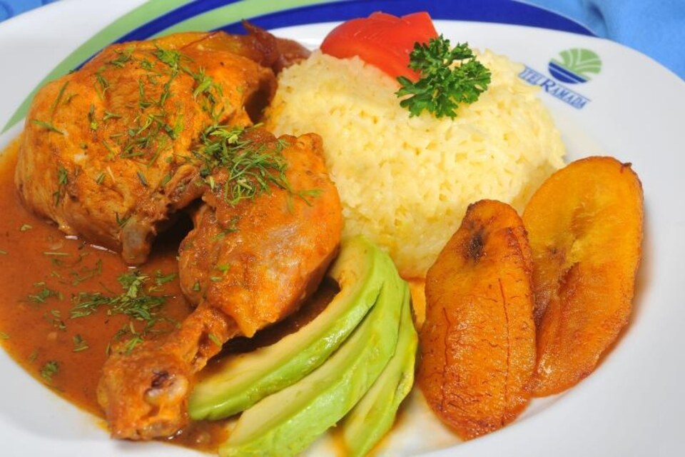
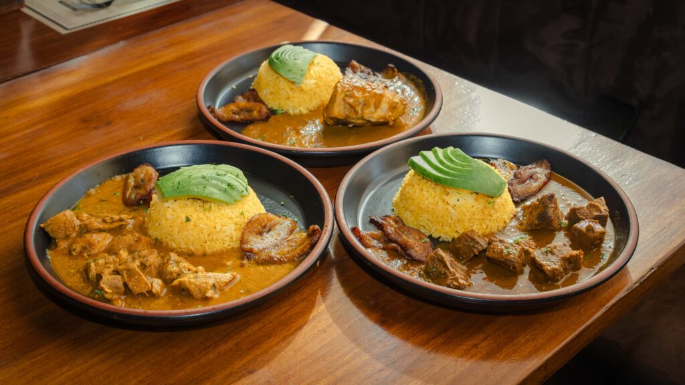
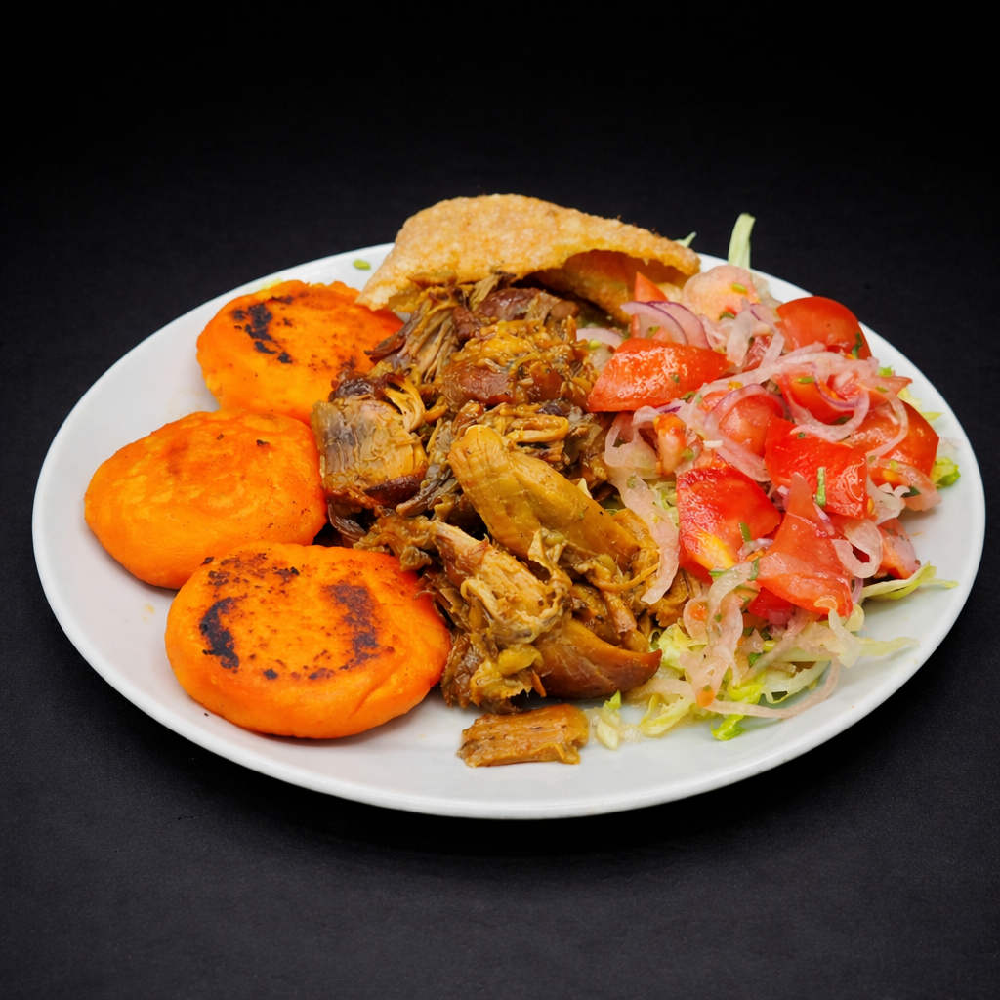

1. Breve descripción del cantón Puebloviejo
Puebloviejo es un cantón perteneciente a la provincia de Los Ríos, ubicado en la región Costa del Ecuador. Su cabecera cantonal lleva el mismo nombre.
Es un territorio caracterizado por sus tierras fértiles y su importante actividad agrícola. Entre sus principales productos se encuentran el arroz, cacao, banano, maíz y otros cultivos.
Sus habitantes conservan tradiciones montubias que forman parte de la identidad cultural de la provincia. Las actividades agrícolas, comerciales y ganaderas contribuyen a la economía del cantón.
Puebloviejo también posee una historia relacionada con el desarrollo de las comunidades rurales y la producción agrícola de la región.
2. Parroquias del cantón Puebloviejo
El cantón Puebloviejo está conformado por una cabecera cantonal y dos parroquias rurales.
Cabecera cantonal
- Puebloviejo.
Parroquias rurales
- Puerto Pechiche.
- San Juan.
Estas parroquias y sus comunidades desarrollan actividades agrícolas, comerciales y ganaderas que contribuyen al desarrollo del cantón.
3. Platos de comida típicos
Los platos típicos más representativos del cantón Puebloviejo (en la provincia de Los Ríos, Ecuador) reflejan la rica tradición de la gastronomía montuvia y costeña:
Seco de gallina criolla

Es uno de los platos más populares y tradicionales de la zona, muy consumido en huecas locales (como los conocidos secos de Marujita) y destacado por su sazón particular.
Sándwiches de chancho al horno
Un clásico emblemático del cantón, muy apreciado por locales y visitantes que recorren la tierra de figuras literarias como Justino Cornejo y Aurora Estrada de Ramírez.
Seco de pato

Preparado de forma tradicional con especias de la zona, muy común en festividades y eventos como las regatas montuvias locales.
Guatita y fritada de cerdo

Platos fuertes tradicionales de la cocina criolla costeña que se sirven en celebraciones y ferias gastronómicas del cantón.
Comida rápida tradicional y postres
Se pueden encontrar delicias populares como pasteles de pollo, jugos naturales tradicionales y una variada oferta de comida de chifa, que forma parte de la cultura culinaria del pueblo.
4. Lugares turísticos del cantón Puebloviejo
Parque central de Puebloviejo
Es uno de los espacios públicos de encuentro de los habitantes. Permite descansar, compartir con familiares y conocer las actividades cotidianas de la ciudad.
Iglesia principal de Puebloviejo
Es un espacio de importancia religiosa y cultural. Representa las tradiciones y creencias de una parte de la población y constituye un punto de referencia dentro de la ciudad.
Parroquia San Juan
Es una parroquia rural que permite conocer las actividades agrícolas y las costumbres de las comunidades del cantón.
Parroquia Puerto Pechiche
Es un sector rural importante por sus actividades productivas y su relación con las tradiciones campesinas de la provincia de Los Ríos.
Entornos naturales y agrícolas
Los paisajes rurales permiten observar cultivos, vegetación y actividades relacionadas con la agricultura. Estos espacios muestran la importancia del campo para la economía local.
Estos lugares tienen interés turístico porque permiten conocer la cultura, las tradiciones y los paisajes naturales del cantón.
Para consultar ubicaciones puedes visitar:
Consultar lugares turísticos de Puebloviejo5. Hoteles donde alojarse en Puebloviejo
Las personas que visitan Puebloviejo pueden consultar establecimientos de alojamiento dentro del cantón y en ciudades cercanas de la provincia de Los Ríos.
Para encontrar opciones disponibles puedes utilizar el siguiente enlace:
Consultar hoteles en PuebloviejoSe recomienda verificar los precios, servicios, ubicación y disponibilidad antes de realizar una reservación.
6. Alcalde del cantón Puebloviejo
Elsy Ospina Garcés
El alcalde es la máxima autoridad del Gobierno Autónomo Descentralizado Municipal de Puebloviejo.
Entre sus principales responsabilidades están administrar los recursos municipales, impulsar obras públicas, mejorar los servicios y promover el desarrollo del cantón.
7. Población del cantón Puebloviejo
La población de Puebloviejo está distribuida entre la cabecera cantonal y sus parroquias rurales, Puerto Pechiche y San Juan.
Para conocer la cantidad exacta de habitantes se debe consultar el Censo de Población y Vivienda de 2022 del Instituto Nacional de Estadística y Censos del Ecuador.
Los datos poblacionales son importantes para conocer el crecimiento del cantón y planificar servicios de salud, educación y obras públicas.
8. Mapa del cantón Puebloviejo
En el siguiente mapa puedes observar la ubicación geográfica del cantón Puebloviejo, perteneciente a la provincia de Los Ríos, Ecuador.